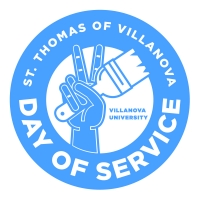
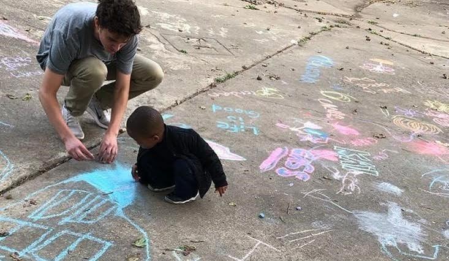
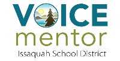
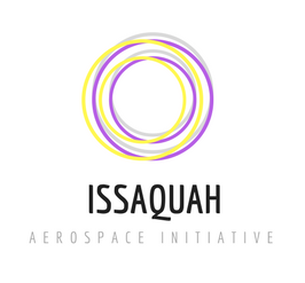

My Volunteer Experience
St. Thomas of Villanova Day of Service 2021

The St. Thomas of Villanova Day of Service is an annual event where thousands of Villanova students gather and bus off to various service locations around the greater Philadelphia area. This year, I traveled with fellow computer science students and pre-med students to Drexel Neumann Academy in Chester, PA. We worked together to clean up their school's basement and playground which needed a lot of work. The youtube video link provided above captures the spirit of this awesome Villanovan service event.
RUIBAL Challenge 2020-2021

The RUIBAL Challenge, or Reaching Urban Individuals By Action and Love, is a community service club that is centered around its title. Students meet weekly with underprivledged elementary students of the greater Philadelphia area to provide friendship, tutoring, and fun play time. Our section of the club focused on addressing social injustices in the schools we serve and promoting positive change. During my service, I volunteered for North Light Community Center
VOICE Mentoring 2018-2020

The VOICE mentorship program, or Volunteers of Issaquah Changing Education, enlists students who apply to served as a role model and mentor to struggling elementary students. I mentored two different 5th grade boys at Clark Elementary School during high school, providing academic and social support through weekly meetings.
Issaquah Aerospace Initiative Service 2020
